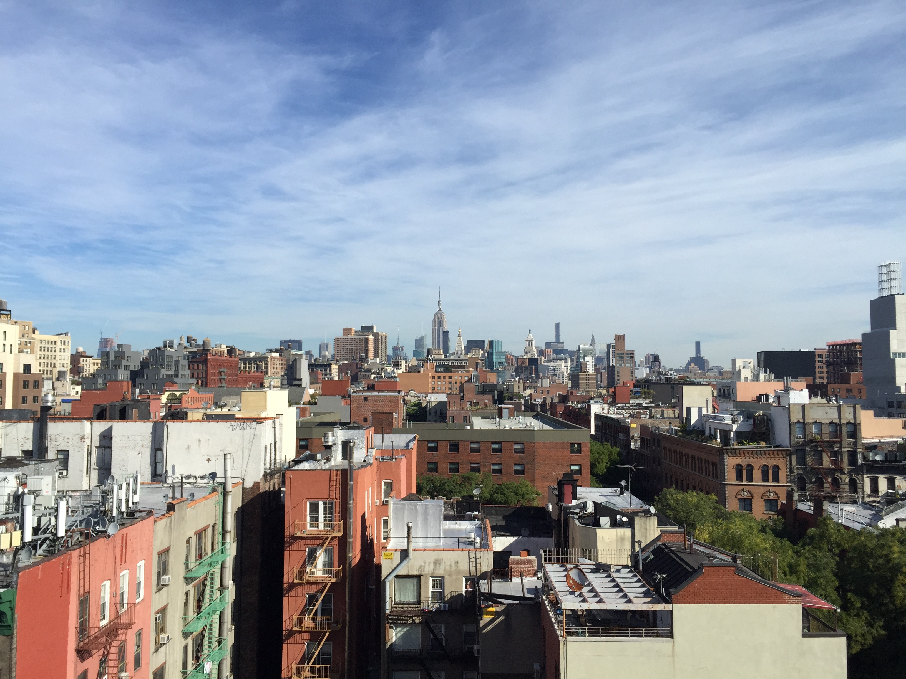
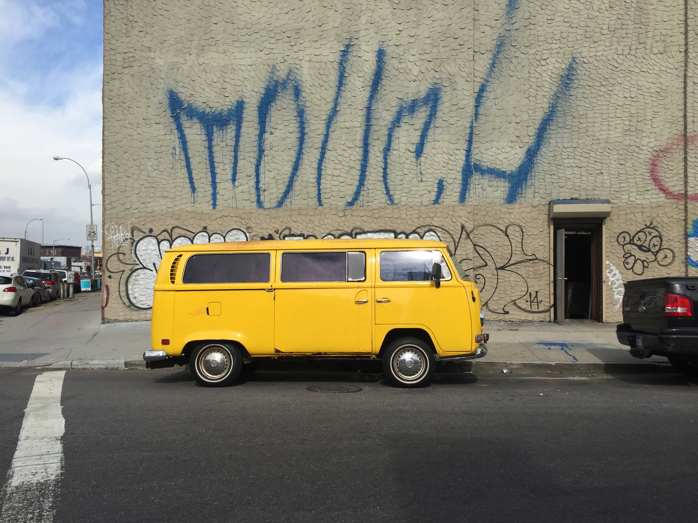
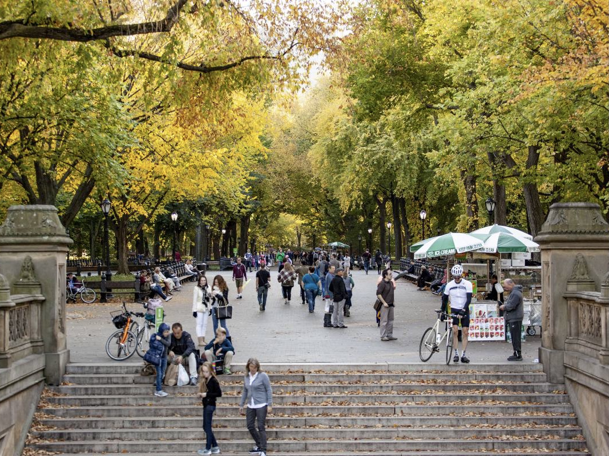
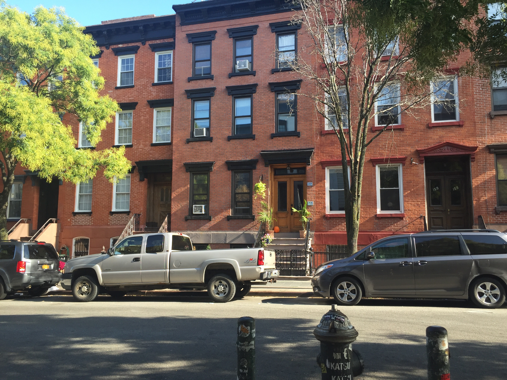
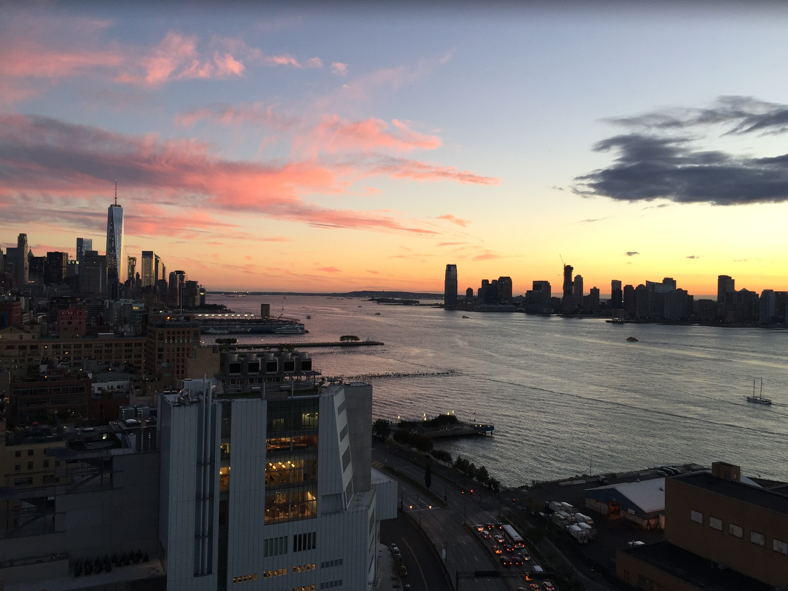
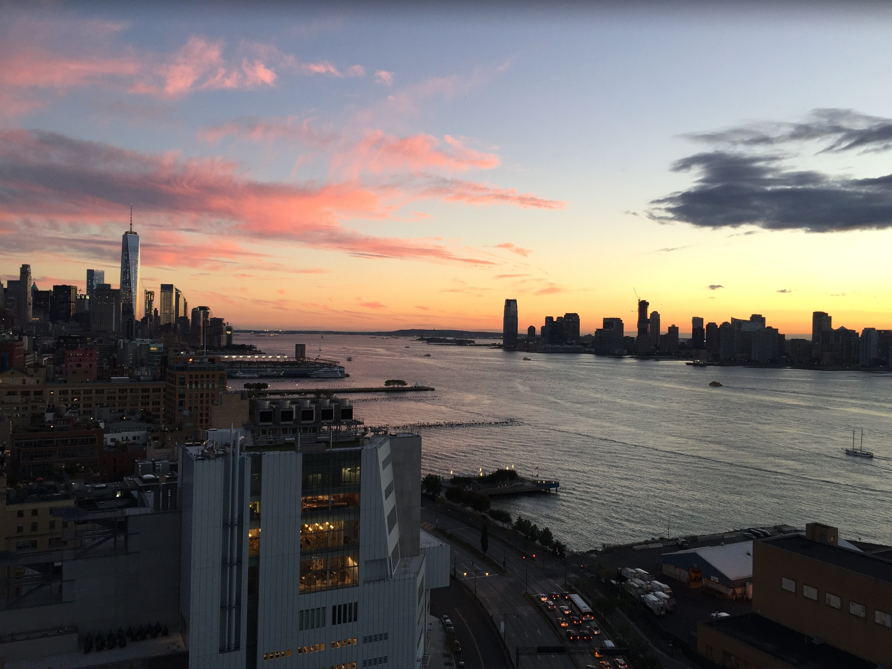

Amerika
New York




Brooklyn Bridge
Ein offizielles Wahrzeichen der Stadt: die Brooklyn Bridge – sie ist eine der vielen wunderschönen Brücken von New York. Sie überspannt den East River und verbindet die Stadtteile Manhattan und Brooklyn miteinander. Zum Zeitpunkt ihrer Fertigstellung 1883 war die Brooklyn Bridge die längste Hängebrücke der Welt; Für die Stadt New York wurde die Brooklyn Bridge schnell zu einem neuen Wahrzeichen.Skyline
In New York hat man egal wo mam sich befindet eine crazy Aussicht auf die Wolkwnkratzer. The Edge Aussichtsplattform: die höchste offene Plattform in New York. Im März 2020 wurde sie eröffnet und wir waren dabei – der Blick von hier oben ist einfach nur sensationell, und durch den Glasboden könnt ihr über 100 Stockwerke direkt nach unten sehen. 
